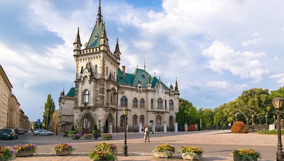
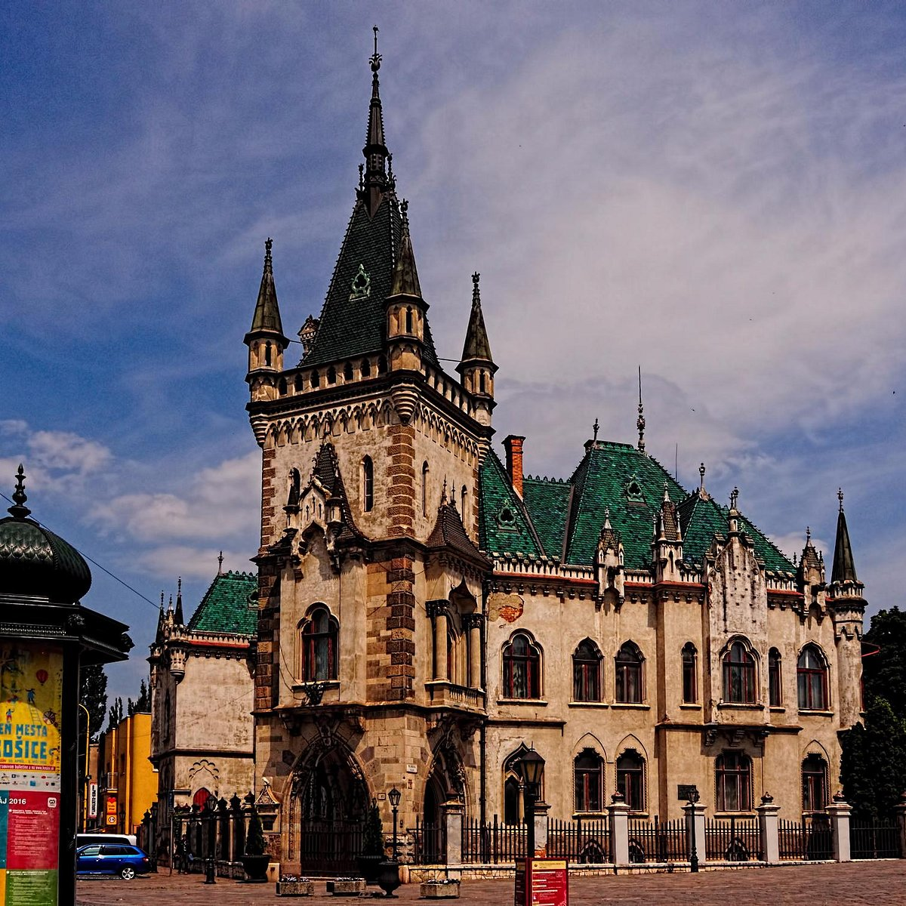

Admire Jakab’s Palace
Even is the palace didn’t belong to any famous or noble family, this is still probably the most beautiful building of that kind in Kosice.
Located at the edge of the Old Town, Jakab’s Palace was built in the Neo-Gothic style for the family of Peter Jakab – the man behind some of the most beautiful buildings in Kosice, such as the State Theater.
This is where the president of Czechoslovakia, Edvard Benes, stayed during his visit to Kosice in April 1945. Be sure to see this stunning building when you are in Kosice too!
Believe it or not, many of Košice’s historical buildings were once palaces. Of these are the Old Town Hall, Andrassy Palace, Bishop’s Palace, Jakabov Palace and a few others. They offer a great glimpse into Baroque, Hungarian, and Slovakian architecture in the region. Although you can’t go inside many of these buildings, it’s definitely interesting to wander around and glimpse them from the outside.

